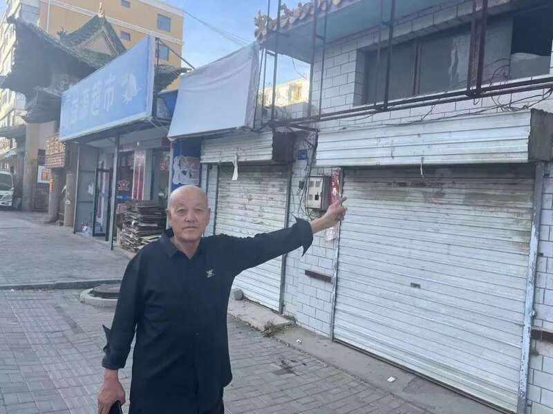

原定于2026年刑满的杨辉提前获释
2005年8月23日14时许，山西大同男子杨辉在自己经营的摩托车维修店中，遇到刚刚刑满释放的雷某前来索要财物。过程中，雷某用杨辉家的尖刀威胁杨辉。一番争执过后，杨辉持刀捅向雷某致其不治身亡。
将雷某送至医院后，杨辉随即潜逃。2008年5月，杨辉因无证驾驶二轮摩托车被张家口市交警扣押，其间他主动交代了自己捅杀雷某的经过。然而，他的行为并未被认定是“正当防卫”。该年12月，大同市中级人民法院一审判处杨辉无期徒刑。杨辉没有上诉。
杨辉生于1980年4月，案发时25岁。在服刑的第11年，也即2019年，他向大同市中院提出再审申诉。2021年11月，再审维持原判。杨辉不服，于2022年1月向山西省高级人民法院提交申诉请求。
2024年8月2日，山西省高级人民法院下发了该案二审判决书。山西高院认可了杨辉的正当防卫权利，但认为其属防卫过当。该院撤销了大同市中级人民法院此前的判决，改判杨辉犯故意伤害罪，判处有期徒刑9年。
原定于2026年刑满释放的杨辉，提前获释。他向中国新闻周刊表示，对于判决结果，他感到有些遗憾，“对比一些正当防卫案例，比如昆山‘反杀’案，可能我这个案件更接近正当防卫”。
获释后的杨辉。图/受访者提供
一审判处无期徒刑
根据山西省最高人民法院作出的事实认定：事发当天下午14时许，雷某来到杨辉位于山西省阳高县龙泉镇的修车铺，向杨辉索要钱财。杨辉将身上的240元给了雷某，又借了200元给雷某。雷某仍不满足。
中国新闻周刊注意到，根据阳高县人民法院2005年作出的一份刑事判决，被害人雷某以借用他人手机为由，骗取他人手机4部，价值2100元，其中包括杨辉一部价值500元的三星手机，雷某因犯诈骗罪被判处有期徒刑六个月。
事发时，雷某刚出狱不久。根据杨辉在侦查机关的供述，雷某出狱后，向其提出拿一万元解决此事。杨辉在供述中称，雷某认为自己毁了他的前途。杨辉表示，雷某只是在其修车铺修过几次车，两人关系一般。
在杨辉借钱未果返回后，雷某与杨辉发生争执，并用杨辉家的尖刀威胁杨辉，让其去弄钱。随后二人发生争打。
根据杨辉2008年到案后的供述，涉事的西瓜刀是雷某从屋内橱柜中找出的。案件资料显示，这是一把木柄单刀，长29cm。“他就用刀在我面前晃来晃去，我怕他用刀扎住我，我就用左手往上挡。这时刀把我左手腕扎破了。他看见血了，就蹲到坑上了，我站在地上不敢动了。”
杨辉描述了自己“夺刀”的过程：雷某转身往炕上取烟时，将刀顺手放在了炕上。我一把把他推倒在炕上，拿起刀上了炕。随后两人发生争打。
这一过程的法律事实，是杨辉拿起雷某放在炕上的刀，用刀在雷某的头上、身上、脖子上捅刺，致雷倒地。随后，杨辉同他人将雷送至医院后逃离。雷某经抢救无效身亡。
2008年12月30日，大同市中级人民法院作出的判决认为，根据已查明的事实，雷某持刀威胁被告人杨辉，而杨辉是趁被害人将刀放在炕上的机会夺走了刀，可见并不是正在进行的不法侵害。因此，杨辉的辩护人所提杨辉的行为属于正当防卫的意见不能成立。
法院称，杨辉多次用刀捅刺被害人，且有要害部位，具有明显的剥夺他人生命的故意。法院判决杨辉犯故意杀人罪，判处无期徒刑，承担民事赔偿194344.5元。杨辉没有上诉。

杨辉父亲在案件发生地。图/受访者提供
雷某行为属于敲诈勒索
在几次减刑过后，杨辉原定2026年刑满释放。
但在2019年8月，狱中的杨辉提起了对该案的申诉申请。杨辉告诉中国新闻周刊，一审未上诉是考虑到在外的家人，他并不认同一审的判决结果。
在狱中的他自学法律知识，也了解了一些正当防卫的案例，如“福建赵宇案”、2019年3月被写入最高人民检察院工作报告的昆山“反杀”案、“河北涞源反杀案”等，他对比了自己的经历，因此提起再审申诉。
刑事辩护律师、河南泽槿律师事务所主任付建向中国新闻周刊介绍，根据我国法律规定，罪犯在服刑期间享有申诉权。这意味着，无论服刑时间多长，只要罪犯认为自己的判决存在错误或不当之处，都有权向有关部门提出申诉。
2020年3月，大同市中级人民法院以“原判认定的部分事实情节缺乏证据支持，导致对部分事实认定错误，依法应予纠正”为由，决定对杨辉故意杀人一案进行再审。2021年11月，大同市中级人民法院再审该案，维持原判。
大同中院认为，雷某行为属于敲诈勒索，应当认定为刑法意义上的不法侵害。
但就杨辉的行为是否构成正当防卫，该院表示，根据杨辉的供述，其手腕被扎破后流出血，雷某看见后就蹲到炕上，说明雷某仅是为强索钱财并没有伤及人身的主观意图。杨辉是趁被害人将刀放在炕上的机会拿起的刀，捅刺的被害人，当时已不存在现实危险的紧迫性。杨辉在炕上捅刺雷某肚上一刀，雷某拿起棉被抵挡，此后杨辉并未离开现场，又连续捅刺被害人三刀致其死亡。
法院认为，杨辉是因为气愤才捅刺的雷某。杨辉不服判决，上诉至山西省高级人民法院。
去年11月2日，山西省高级人民法院对该案进行了二审。8月2日，山西省高级人民法院下发了该案的二审判决书。中国新闻周刊注意到，该判决书落款为6月14日。
判决书中提到，杨辉供述案发前雷某曾两次去杨辉的修理铺向杨辉要钱，对其殴打，虽然第一次没有第三人在场，但杨辉有多次供述且稳定，第二次有证人佐证，故可以认定雷某向杨辉要过钱。
杨辉的辩护律师认为，雷某在本案中持刀已经构成“行凶”、多次当面威胁或施以暴力并当面取得钱财已经构成抢劫罪而非一审认定的“敲诈勒索”罪，在此前提下杨辉完全有权利予以特殊防卫。
特殊防卫权，又称无限防卫权。山西高院则表示，雷某向杨辉敲诈勒索钱财，虽然杨辉供述雷某持刀威胁过其，但是从杨辉所供雷某放下刀、取烟等内容看，雷某的行为仍系敲诈勒索，尚不属于严重危及人身安全的暴力犯罪，因此本案不具备实施特殊防卫的前提条件，杨辉的行为不能认定为特殊防卫。
从故意杀人到故意伤害
山西省高级人民法院认为，在杨辉拿上刀首先捅刺雷某后，从双方的力量对比看明显杨辉处于优势。杨辉采取的上述行为与雷某的敲诈勒索不法侵害行为相差悬殊，明显过激，应当认定为防卫明显超过必要限度；同时杨辉的行为造成雷某死亡的重大损害结果发生，故应当认定为防卫过当。
而杨辉将雷某送医救治的行为，印证了其主观上并无剥夺雷某生命的故意，故其行为不构成故意杀人罪。
山西省高级人民法院撤销了大同市中级人民法院此前判决，改判杨辉犯故意伤害罪，判处有期徒刑9年。由此，刑满日期调整为2017年5月，杨辉提前获释。
杨辉的妹妹告诉中国新闻周刊，因为家里经济条件等原因，初中毕业后，杨辉放弃了学业。他干过农活，也曾外出打零工，后来自学了修摩托车，借钱开了一家摩托车修理铺。案发时杨辉25岁，孩子出生不到1个月。一审判决后，他的妻子带着孩子改嫁了。
中国新闻周刊获悉，2005年案发时，被刺死的雷某也刚过20岁。他父亲已于去年去世，雷某姐姐是该案雷方的代理律师之一。中国新闻周刊联系了雷某姐姐，其并未予以回应。
“我走的时候弟弟妹妹都小，父亲那时候也还年轻”，杨辉表示，他在狱中学习了一些简单的维修，像是缝纫机的日常保养。对于未来，他暂时没有明确的计划，“也不知道自己能干些啥”。